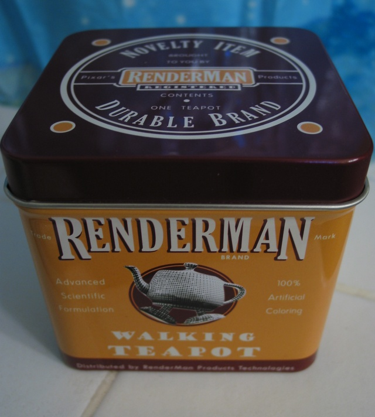

Stupid RenderMan/RAT Tricks 2005
Welcome to the Seventh Annual Stupid RenderMan/RAT Tricks!

What's on this page?
Materials from the 6th installment of Stupid RenderMan/RAT Tricks.
Speakers:
Hal Bertram -- an interactive rendering technique
Ryan Heniser -- network factory
Luca Fascione -- RAT pipeline tricks
Soren Ragsdale -- hybrid ambient occlusion
Special Guests:
Guido Quaroni -- 3D Printing
--
The Interaction Trick
Hal Bertram presented a technique of a doing interactive renders via a viewer program that acts as a rayserver to talk to PRMan to tell it what it should be doing. He has a movie and notes on his web site, Hal Bertram.com. He may also be adding the shaders and source code sometime, too.
DNA Network Factory
Ryan Heniser presented a system to make it easier/faster to deal slim networks using a language, called Spec. Here is a gzip-ed PDF document (~460k) of his slides. Ryan has also provided dnaNetworkFactoryRelease.tgz (gzip-ed tar file) which contains example .slim and .specs files and the .tcl script that he describes.
Speedups with Hybrid Ambient Occlusion
Soren Ragsdale presented a hybrid ambient occlusion method, which is much faster than normal ambient occlusion. Here are his slides (PDF ~4.5 MB).
RAT Pipeline tricks
Luca Fascione presented three tricks for users of RAT. Here are his slides (PDF ~300K).
PRMan 3D Printing
Guido Quaroni, from Pixar, talked about using PRMan to generate data that can be send out to a color 3D Printer. Here is his PDF document.
The RMR is Copyright © 1995-2005 Tal L. Lancaster all rights reserved
Last modified: Sun Sep 18 22:47:25 PDT 2005